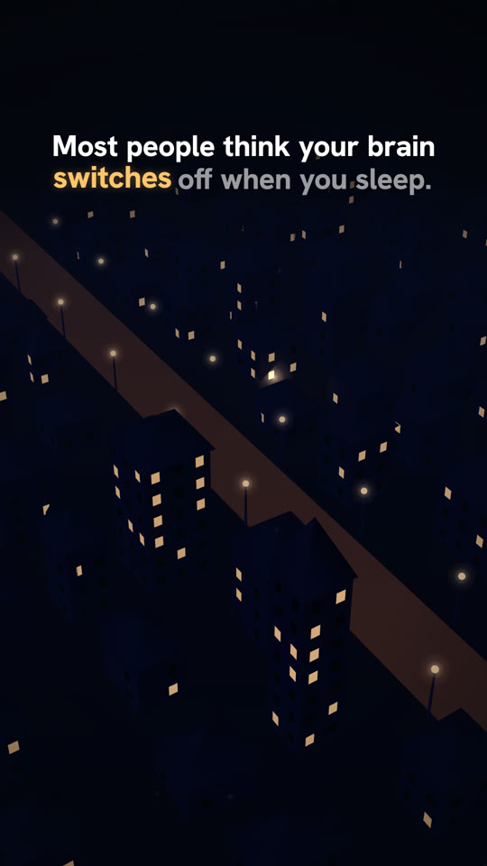
Beat 11.6 s
Most people think your brain switches off when you sleep.
His town at night; windows going dark one by one. One window stays lit and we drop to it.
Rough stills from the real scene files, timed to the AI voice (68.8 s), with the captions in place. This board checks the pictures and the order. Lighting, detail and motion get polished in the full build. Under each frame, "To fix" lists what I already know is weak.

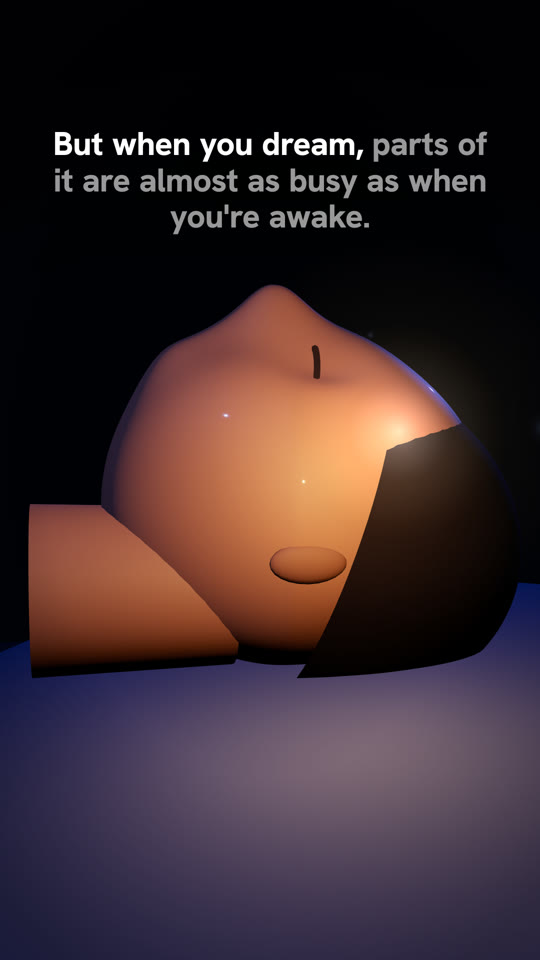
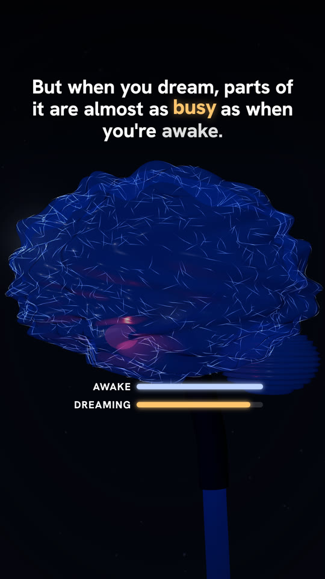
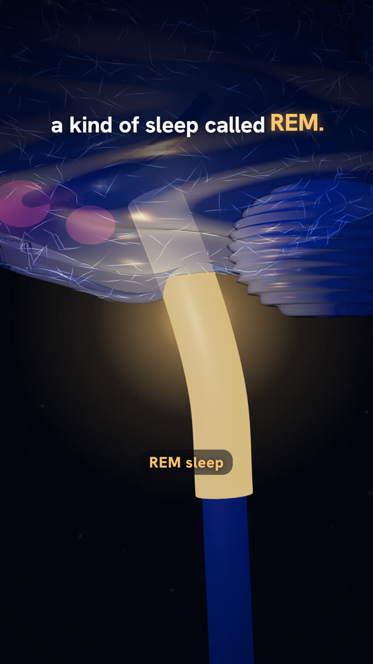
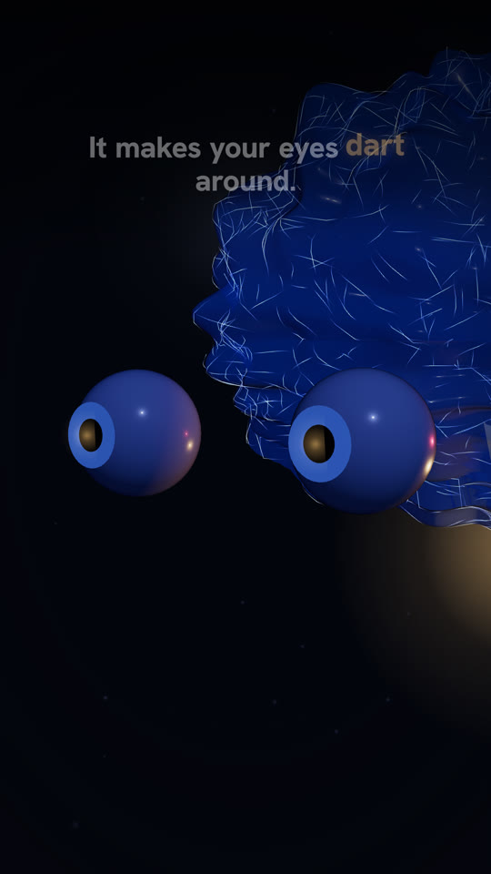
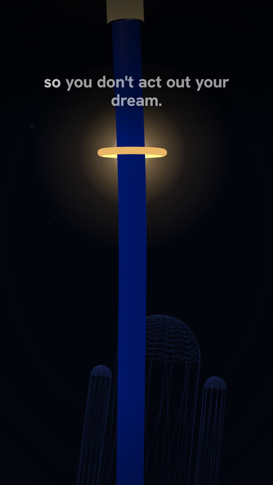
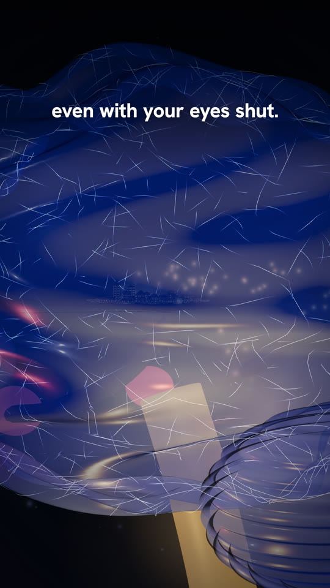
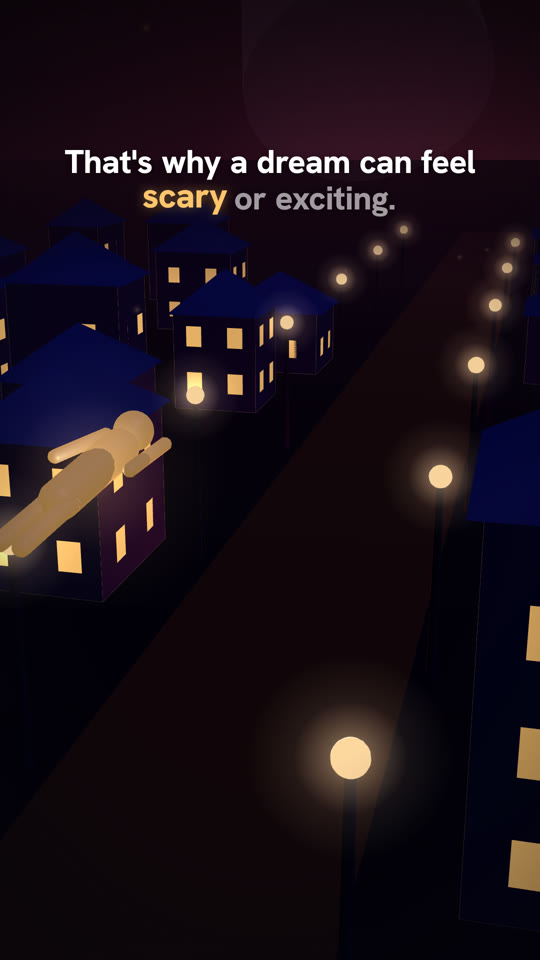
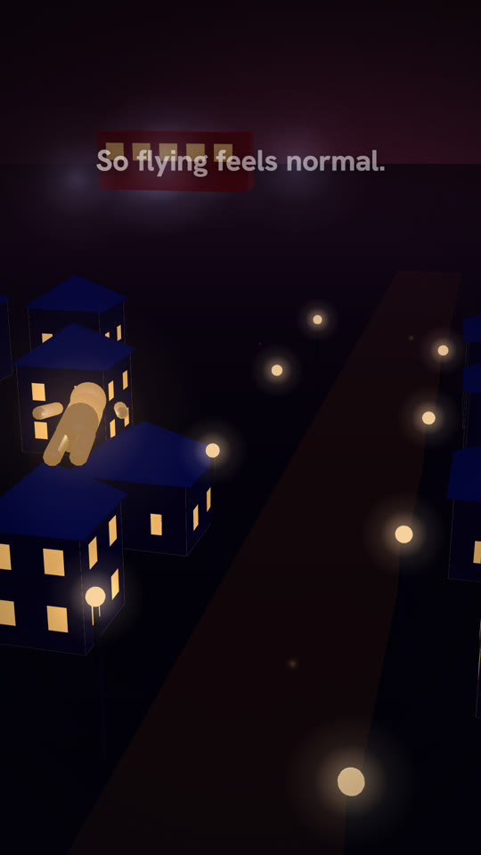
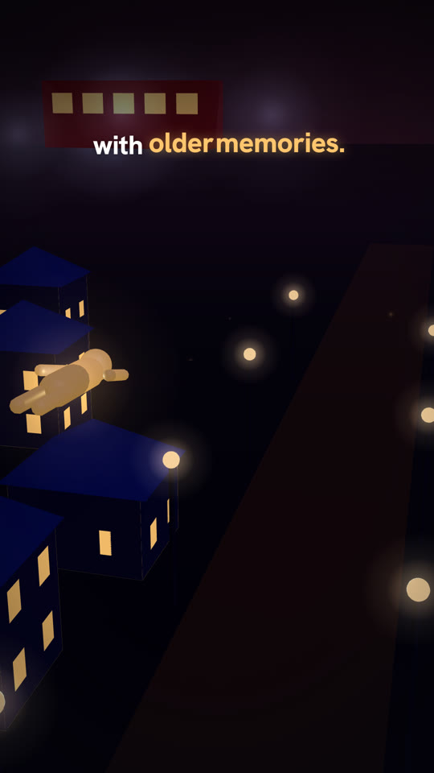
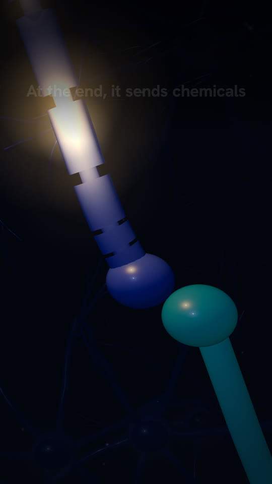
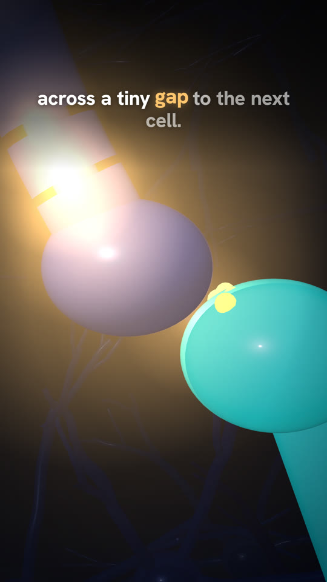
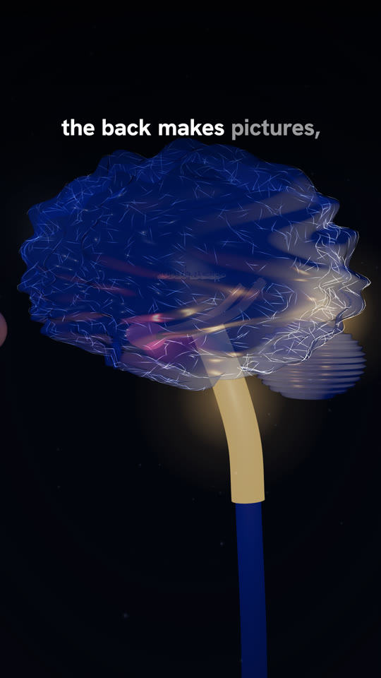
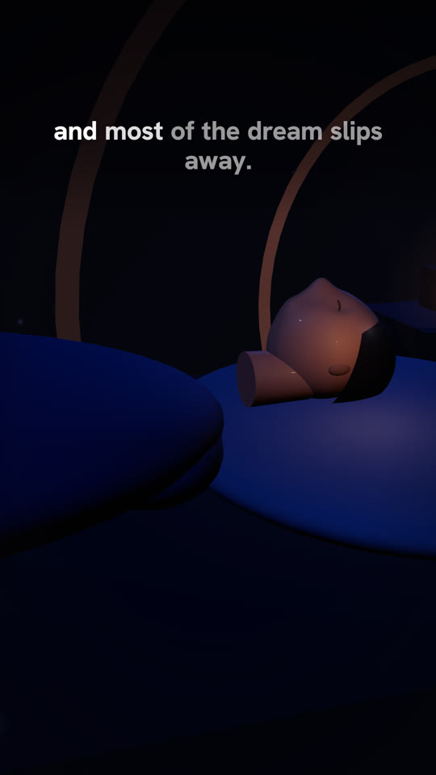
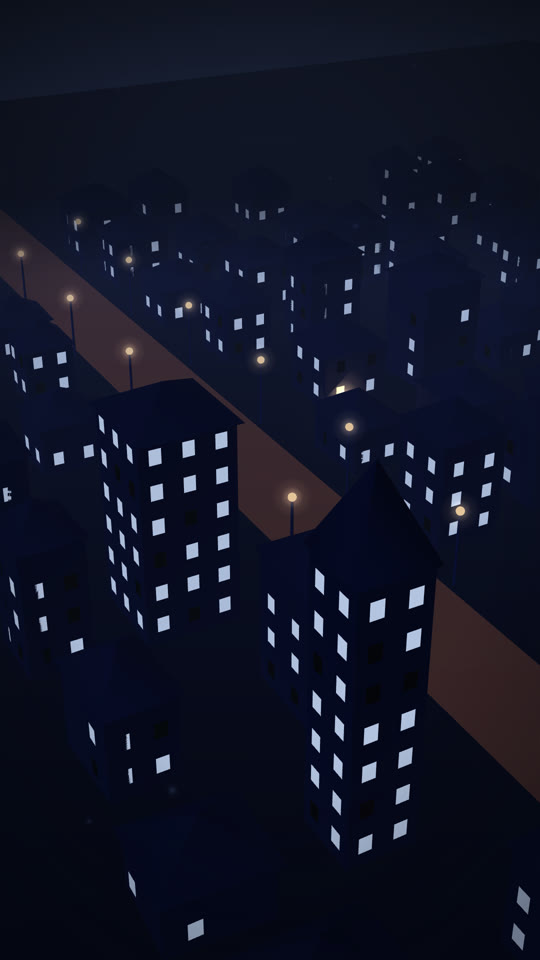